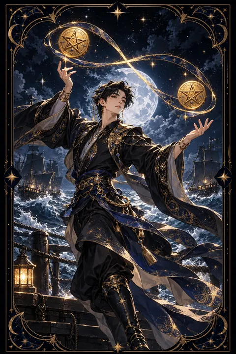

펜타클 2 카드 — 유연한 균형과 우선순위
펜타클 2 카드 한눈에 보기
펜타클 2 카드 상징 읽기

동네보살의 카드 그림은 전통 라이더–웨이트 덱의 뜻을 새 그림으로 옮긴 것입니다. 아래 상징 설명은 전통 덱의 그림을 기준으로 합니다.
한 젊은이가 금화 두 닢을 손에 들고 가볍게 춤을 추듯 저글링하고 있습니다. 두 금화는 누운 팔자 모양의 끈으로 이어져 있어 한쪽이 올라가면 다른 쪽이 내려오는 끝없는 순환을 보여 줍니다.
이 끈은 무한대 기호와 같은 모양입니다. 수입과 지출, 일과 휴식처럼 서로 맞물린 두 가지를 번갈아 돌보는 일이 한 번으로 끝나지 않고 계속 이어진다는 뜻입니다.
배경의 바다에는 배 두 척이 높은 파도를 오르내리고 있습니다. 삶의 형편이 출렁이는 가운데서도 중심을 잃지 않고 물결을 타는 모습입니다.
젊은이가 쓴 높은 모자와 가벼운 발놀림은 부담스러운 상황도 여유 있게 즐기는 태도를 나타냅니다. 균형은 멈춰 서서 지키는 것이 아니라 움직이면서 계속 맞추는 것임을 알려 주는 카드입니다.
펜타클 2 카드 정방향 뜻
정방향 펜타클 2는 여러 가지 일을 동시에 챙기면서도 균형을 잘 잡고 있는 상태를 뜻합니다. 바쁘고 변화가 많은 시기이지만 상황에 맞춰 유연하게 움직이는 능력이 빛을 발합니다.
직장과 집안일, 본업과 부업처럼 두 영역을 오가야 하는 경우가 많습니다. 이 카드는 그 둘을 다 해낼 수 있다고 말하면서도 순서를 정하는 지혜를 요구합니다. 무엇을 먼저 올리고 무엇을 잠시 내려둘지 정해 두면 정신없는 일정도 리듬을 갖게 됩니다.
금전 면에서는 들어오는 돈과 나가는 돈의 시기를 맞추는 일이 중요합니다. 월급날과 고정 지출일을 한눈에 보이게 적어 두면 빠듯한 달도 무리 없이 넘길 수 있습니다. 즐거운 마음으로 변화를 받아들이는 태도가 이 시기의 가장 큰 무기입니다. 변화를 부담이 아니라 새로운 박자로 받아들이면 바쁜 시기도 성장의 기회가 됩니다.
펜타클 2 카드 역방향 뜻
역방향 펜타클 2는 감당할 수 있는 양보다 많은 일을 떠안아 균형이 무너진 모습입니다. 약속과 마감이 겹치고 해야 할 일은 쌓이는데 어디서부터 손대야 할지 몰라 허둥대기 쉽습니다.
돈 문제에서는 지출이 한꺼번에 몰리거나 카드값과 고정비가 겹쳐 빠듯함을 느낄 수 있습니다. 이때 무리해서 모든 것을 한 번에 해결하려 하면 오히려 더 꼬입니다.
해법은 줄이는 데 있습니다. 지금 하고 있는 일을 모두 적어 보고 당장 하지 않아도 되는 것은 과감히 미루거나 내려놓으세요. 도움을 요청하는 것도 실력입니다. 일정과 지출 날짜를 흩어 놓기만 해도 숨 쉴 틈이 생깁니다. 공을 하나 줄이면 남은 공은 다시 부드럽게 돌아갑니다. 필요하다면 가족이나 동료에게 일부를 맡기는 것도 좋은 선택입니다. 한 번에 모든 것을 해내려는 부담을 내려놓는 순간 판단이 다시 선명해집니다.
연애에서 펜타클 2 카드
솔로라면 여러 사람과 가볍게 어울리며 즐거운 시간을 보내기 좋은 시기입니다. 다만 마음이 이쪽저쪽으로 흔들릴 수 있으니 누구에게 더 끌리는지 스스로 솔직하게 살펴보는 시간이 필요합니다. 바쁜 일상 속에서도 연락을 꾸준히 이어 가는 사람이 좋은 인연으로 남습니다.
짝이 있는 경우라면 일과 관계 사이에서 균형을 맞추는 것이 과제입니다. 서로 바쁜 시기라도 짧은 통화나 주말 한 끼처럼 정해진 만남의 리듬을 만들어 두면 관계가 흔들리지 않습니다. 한쪽만 맞춰 주는 관계가 되지 않도록 서로의 일정을 공유하고 배려하는 것이 좋습니다. 가볍고 유쾌한 분위기를 잃지 않는 것이 이 카드가 전하는 연애의 요령입니다. 상대가 바쁘다고 해서 마음이 식었다고 여기기보다 서로의 사정을 먼저 물어보는 여유를 가져 보세요.
재회·속마음 질문에서 펜타클 2 카드
재회를 두고 펜타클 2가 나오면 상대의 마음이 아직 여러 선택지 사이에서 흔들리고 있을 가능성이 있습니다. 상대도 바쁜 사정이나 현실적인 고민 때문에 결정을 미루고 있을 수 있습니다. 서두르기보다 가볍고 부담 없는 연락으로 흐름을 이어 가는 편이 좋습니다. 당신 역시 재회와 새 출발 사이에서 저울질하고 있다면 무엇을 더 원하는지 먼저 정리해 보세요. 마음의 중심이 서야 관계의 균형도 맞출 수 있습니다. 지금은 결론을 서둘러 내기보다 일상의 균형을 먼저 되찾는 시기입니다. 스스로의 생활이 안정되면 상대를 대하는 태도에도 여유가 생기고 그 여유가 다시 가까워질 계기를 만듭니다. 짧은 안부로 대화의 끈을 이어 두는 정도가 지금은 알맞습니다.
일·금전에서 펜타클 2 카드
일과 직장에서는 여러 업무를 동시에 처리하는 능력이 요구되는 시기입니다. 변화가 잦은 환경일수록 빠르게 적응하는 모습이 좋은 평가로 이어집니다. 다만 모든 요청을 받아들이면 결과물의 질이 떨어질 수 있으니 우선순위를 윗사람과 분명히 맞춰 두세요.
돈 관리에서는 들어오는 돈과 나가는 돈의 박자를 맞추는 관리가 핵심입니다. 고정 지출 날짜를 정리하고 비상금을 조금씩 마련해 두면 출렁이는 달에도 흔들리지 않습니다. 업무 목록을 매일 아침 짧게 정리하는 습관이 큰 도움이 됩니다. 부업이나 새 일을 더하고 싶다면 지금 맡은 일이 안정된 뒤로 미루는 편이 현명합니다. 바쁜 가운데서도 쉬는 시간을 일정에 넣어 두어야 오래 버틸 수 있습니다.
펜타클 2 카드는 예일까 아니오일까
상황을 잘 조율하면 원하는 결과를 얻을 수 있지만 여러 일이 동시에 얽혀 있어 조건부 답이 알맞습니다. 거꾸로 나왔다면 지금 벌인 일부터 줄여야 한다는 뜻이라 아니오에 가깝습니다.
자주 묻는 질문
펜타클 2 카드 역방향은 나쁜 뜻인가요?
역방향 펜타클 2는 감당할 수 있는 양보다 많은 일을 떠안아 균형이 무너진 모습입니다. 약속과 마감이 겹치고 해야 할 일은 쌓이는데 어디서부터 손대야 할지 몰라 허둥대기 쉽습니다.
펜타클 2 카드가 연애 질문에 나오면요?
솔로라면 여러 사람과 가볍게 어울리며 즐거운 시간을 보내기 좋은 시기입니다. 다만 마음이 이쪽저쪽으로 흔들릴 수 있으니 누구에게 더 끌리는지 스스로 솔직하게 살펴보는 시간이 필요합니다. 바쁜 일상 속에서도 연락을 꾸준히 이어 가는 사람이 좋은 인연으로 남습니다.
타로 카드는 어떻게 뽑나요?
타로 카드 페이지에서 78장을 섞으면 그중 22장이 펼쳐집니다. 마음이 가는 세 장을 고르면 과거·현재·미래 자리에 놓이고, 한 장씩 뒤집어 자리와 방향에 맞는 풀이를 읽습니다. 정방향과 역방향은 섞는 순간 정해집니다.